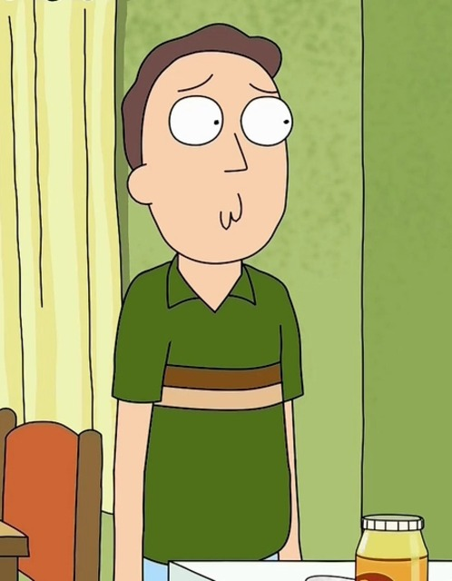
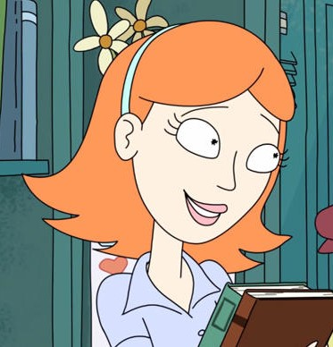
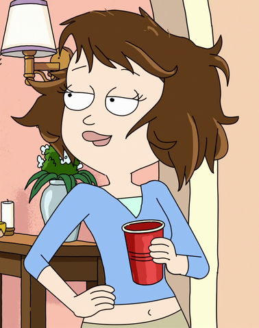
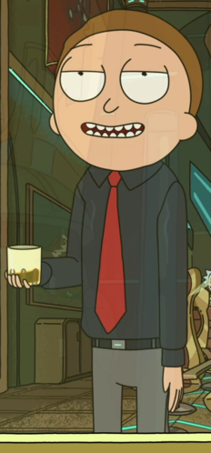
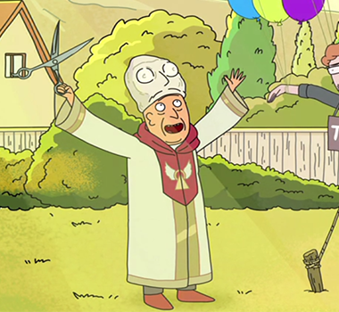

Um cientista alcoólatra de 60 anos extremamente inteligente que é capaz de construir máquinas e acessórios tecnológicos que o permitem viajar por diversas dimensões e realidades paralelas. Ele quase nunca pensa nas consequências de suas ações e possui um comportamento excêntrico e um estilo de vida niilista. É pai de Beth, sogro de Jerry e avô de Morty e Summer.
2. Morty Smith
Neto de Rick facilmente influenciável e com dificuldades escolares de 14 anos de Rick, parece ser a quem este demonstra maior afeto e expectativa dentro da família, o que faz com que ele sempre acabe por acompanhar Rick em suas aventuras, enquanto descobre o que é o próprio mundo real e reflete sobre a existência das coisas.
3. Jerry Smith
Pai inseguro de Summer e Morty, 35 anos que desaprova fortemente a influência de Rick sobre seu filho. Ele trabalhou em uma agência de publicidade de baixo nível, até que foi demitido por incompetência e agora está desempregado. Tem uma personalidade infantil e impressionável.

4. Beth Smith
É filha de Rick, esposa de Jerry e mãe de Summer e Morty, aos 34. Como seu pai, ela bebe muito e é bastante inteligente, mas ao contrário dele, é sempre responsável. Ela trabalha em um hospital como cirurgiã de cavalos e muitas vezes se arrepende de não ter sido médica. Ela frequentemente tem discussões com seu marido, vendo uma incompatibilidade em ambos.
5. Summer Smith
Tem 17 anos e é a irmã mais velha de Morty, uma adolescente convencional muitas vezes superficial, que é obcecada por melhorar seu status com seus colegas. Ela ocasionalmente expressa inveja por Morty sempre acompanhar Rick em suas aventuras interdimensionais. Na segunda temporada, ela acompanha Rick e Morty com mais frequência. Foi revelado que Beth tinha engravidado aos 17, a idade que Summer tinha.
Secundários
1. Jessica
Uma menina atraente que frequenta a Harry Herpson High School, mesma escola de Morty e Summer. Morty a ama (embora fique claro na série que boa parte de seu interesse por ela vem de seu corpo), mas ela raramente o reconhece.

2. Tammy Guetermann
É uma agente de cobertura profunda da Federação Galáctica e filha de Pat Gueterman e Donna Gueterman. Ela também foi aluna da Harry Herpson High School e amiga íntima de Summer Smith. Ela ficou noiva de Pessoa-Pásssaro e planejou um casamento como uma manobra para reunir tantos inimigos da Federação Galáctica em um local, a fim de capturá-los e prendê-los. Após a queda da Federação, ela se tornou a líder dos restos mortais e provavelmente servirá como um dos principais antagonistas do programa.

3. Evil Morty (Mal Morty)
Mal Morty é uma das muitas versões de Morty na Curva Central Finita. Ele é um dos antagonistas recorrentes da série, que atualmente serve como o primeiro Morty a ser eleito democraticamente presidente da Cidadela de Ricks . Ele apareceu pela primeira vez em " Close Rick-Counters do Rick Kind ", como o verdadeiro antagonista, e foi visto sendo cercado pelos outros Rickless Mortys.
Em " Tales From the Citadel ", Evil Morty retorna como o principal antagonista do episódio, vencendo a eleição democrática realizada pela reconstruída Citadel of Ricks, e se torna presidente, mantendo sua verdadeira identidade e história escondida. Depois de ser eleito, ele começa a assassinar todos os Rick no conselho sombrio que manifestaram sua oposição a ele, tornando-se o ditador efetivo da Cidadela.

4. Pessoa-Pássaro (Birdman)
Pessoa-Pássaro, atualmente conhecido como Birdperson, é um personagem recorrente em Rick e Morty. Ele é um velho amigo de Rick e aparentemente conhece Morty desde que ele era um bebê. Ele atende a festa de Rick à procura de um novo companheiro depois de terminar seu vínculo de alma com seu antigo parceiro espiritual. No final do episódio, ele volta à sela com uma das amigas de Summer, Tammy.
5. Squanchy
Squanchy é uma criatura antropomórfica felina que foi convidada para a festa de Rick e Summer em "Ricksy Business". Ele é um personagem recorrente em Rick e Morty, e muito bom amigo de Rick, compartilhando seu amor pelo álcool. Morty e Jessica conhecem Squanchy pela primeira vez em uma masturbação auto-erótica de asfixia na garagem de Morty. Isso marca o primeiro entre muitas coisas a que ele se refere como "squanchy".
6. Gene Vagina
Possui o cargo de diretor da Harry Herpson High School. Ele muitas vezes faz questão de lembrar as pessoas que, apesar de seu sobrenome engraçado, ele é "muito responsável."

7. Mr. Goldenfold
Um estudante em Harry Herpson High School. Ele é um atleta que joga futebol para a escola e namora com Jessica. Ele não aparece na segunda temporada, então presume-se que ele e Jessica se separaram; pelo fato de Jessica ir ao baile com Morty em "Big Trouble in Little Sanchez".